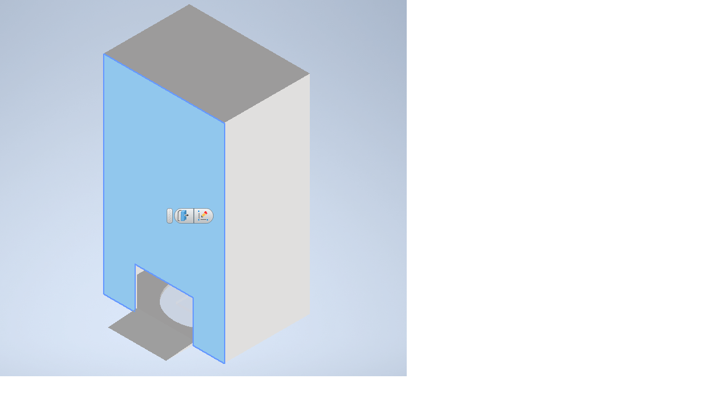
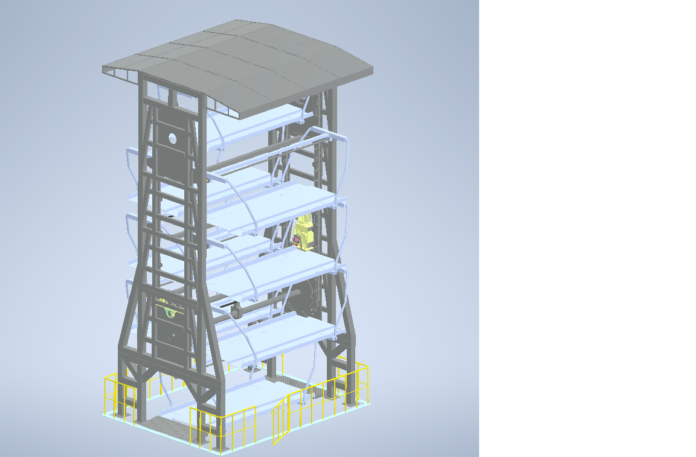
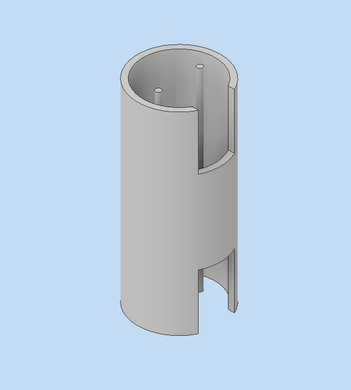
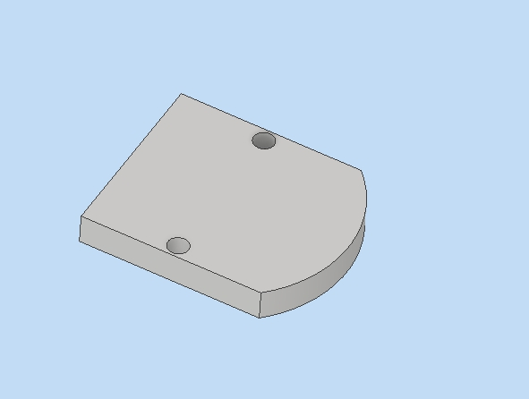

2021-協同產品設計實習-stage3-ag2
專題題目:機械停車塔 Mechanical parking tower
repo site 組員: 40823101林晏鈴40823102劉怡萱 40823104葉沛翎40823106廖苡雯 40823151陳冠宇40871106黃翊銘 40623121蔡朝旭每週進度
W11 討論專題方向、每週進度
W12 建置網頁，每位成員進行協同，並討論題目
W13 進行零件繪製並討論分工
W14 進行零件繪製並討論
W15 修正零件圖並進行coppeliasim模擬並修正
W16 進行coppeliasim模擬與機構更改
W17 進行coppeliasim模擬讓程式控制鍵盤可以操作
W18 討論期末分工並進行報告
W11
討論專題方向、每週進度
W12
建置網頁，每位成員進行協同，並討論專題題目
設計目標

W13
進行零件繪製並討論分工
工作分派
40823101 林晏鈴 網頁更新/繪圖
40823102 劉怡萱 網頁更新/繪圖
40823104 葉沛翎 網頁更新/繪圖
40823106 廖苡雯 網頁更新/程式模擬
40823151 陳冠宇 網頁更新/程式模擬
40871106 黃翊銘 網頁更新/程式模擬
40623121 蔡朝旭 網頁更新/程式模擬
W14
進行零件繪製並討論
Transition Styles
總共有3種模組
第一種

Transition Styles
總共有3種模組
第二種

Transition Styles
總共有3種模組
第三種

W15
修正零件圖並進行coppeliasim模擬並修正
小組討論決定採用第三種模組
電梯轉軸，讓車子可以在這區間做動

小組討論決定採用第一種模組
電梯承載車子的底

小組討論決定採用第一種模組
設計理念為在車子開進去後轉軸帶動電梯門會轉動到車子要進去的方向，上圖(電梯承載車子的底)會做上下移動，協助車子上下樓，再藉由轉軸帶動電梯門會轉動到車子要停車或離開的方向
W16
進行coppeliasim模擬與機構更改
製作過程影片
W16
進行coppeliasim模擬讓程式控制鍵盤可以操作
製作過程影片
W18 討論期末分工並進行報告